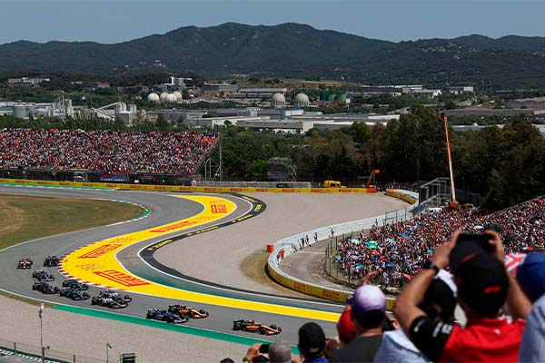
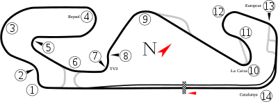

NAVEGUE
Home
Pilotos
Calendário/Tabela
Grand Prix
Construtoras
Últimas Notícias
GP da Espanha
SOBRE
A pista de Barcelona, também conhecida como Circuito de Barcelona-Catalunha, é um circuito de corrida localizado em Montmeló, na Catalunha, Espanha, que é conhecido por sediar o Grande Prêmio da Espanha de Fórmula 1 desde 1991. A pista tem um comprimento de 4,655 km e apresenta uma série de curvas desafiadoras, como a curva La Caixa e a curva Campsa, bem como uma reta longa que oferece oportunidades de ultrapassagem. A pista de Barcelona é frequentemente usada para testes de pré-temporada da Fórmula 1, devido às suas condições climáticas previsíveis e à sua variedade de curvas.
Circuitos Utilizados
Catalunha

INFORMAÇÕES DA CORRIDA

Localização
Montmeló, Espanha
Voltas
66
Percurso
4.655 km
Total
307.104 km
Curvas
16
Pole
Max Verstappen
Anos Disputados
68
Última Disputa
2023
Maior vencedor
Michael Schumacher
Última Corrida - Pódio
Max Verstappen